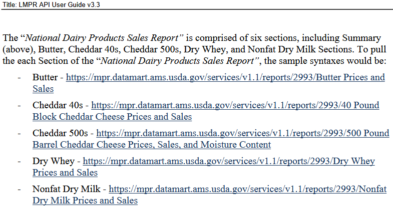

Working with APIs in R
February 5, 2026
My Background
- Agricultural Economist in AMS Dairy Program
- Started with AMS in 2022
- Ph.D. in Agricultural and Resource Economics from UC Davis
Started working in R in grad school because I did not want to rely on proprietary software anymore (in other words, I was cheap and broke).
I have not always been good about using APIs, so I started trying to prioritize them in my work at USDA.
Assumptions
I am making a (limited) set of assumptions about your knowledge coming into this seminar:
- Familiarity with
tidyversefunctions and the pipe (both%>%and|>) - Familiarity with R object and data types (e.g., string, list, vector)
- Understanding of function terminology (e.g., what an argument is)
- Some understanding of how the internet works
Whenever I use functions from packages outside of the tidyverse, I will specify them using the package_name::function_name() syntax to make it clear where they come from.
Therefore, I’m only going to load one package to use in this presentation:
Topics Covered
- Definitions: What even is an API?
- Example API: Mandatory Price Reporting Data
- How to interact with APIs using R and the
httr2package - Building an API Function
- API Authentication
- Example API: My Market News
Definitions
What is an API?
API stands for Application Programming Interface.
As a general term, it is a framework which connects computers or software together.
In a data science context, typically refers to a system allowing access to data via a specialized request-response framework.
A more precise definition would be to refer to the latter as web APIs, but they are often simply called APIs.
Web APIs

A web API will have a set of defined endpoints that a user can access with a correctly-formatted request and receive a response.
Requests are typically formatted using HTTP and use one of a set of verbs, the most common being GET and POST. To access data, GET is the verb to use.
Responses can be in the form of JSON, XML, HTML, or plain text data, though JSON is the most common.
Anatomy of an API Call
Let’s look at an API call some of us have seen already (from Intermediate Assignments 1 and 2):
https://api.census.gov/data/2020/dec/pl?get=P1_001N&for=county
The first part is the base URL used across the Census API.
The next part defines the API endpoint: /2020/dec is pointing the the 2020 Decennial Census, within which /pl specifies the specific dataset. In this case, the full endpoint points to the redistricting data from the 2020 Decennial Census.
Everything after the ? defines the query parameters:
get=P1_001Nsays we are using aGETHTTP action and requesting theP1_001Nvariable (total population).&is used to separate query parameters if multiple are specified.for=countyspecifies the geography level, i.e. county-level total population. This could be changed tofor=stateto return state-level population, or another specific named geography.
Why use an API?
Using a web API requires some extra work. What is the benefit of that extra effort?
- Regularly updated data: If you are using high-frequency data, using an API ensures you always have access to the most up-to-date data.
- Reproducibility: Know what you are getting each time the code is run. Ensure your collaborators get the same results as you.
- Reusability: In many cases, once the code is written it can be used over and over (especially if you build a function).
- Automation: Using an API can remove manual processes, such as downloading data.
Exploring a Scenario
Mandatory Price Reporting Data
Suppose we need to access data from the Dairy Product Mandatory Reporting Program (DPMRP).
This program collects prices and sales volumes for butter, cheese, dry whey, and nonfat dry milk.
These data are accessible through the Datamart website (as are data from other mandatory reporting programs).

Datamart API User Guide
Datamart data are accessible through an API, and the main Datamart webpage has a link to a user guide for that API.
The following URL provides access to butter prices and sales data:
https://mpr.datamart.ams.usda.gov/services/v1.1/reports/2993/Butter%20Prices%20and%20Sales
But how do we access these data from within R?
Introduction to httr2
httr2
httr2 is a package developed by Hadley Wickham, the mastermind behind the tidyverse, which provides a robust framework for building and executing HTTP requests.
First released in 2021 (so, relatively new in terms of R packages).

httr2
httr2 is a package developed by Hadley Wickham, the mastermind behind the tidyverse, which provides a robust framework for building and executing HTTP requests.
First released in 2021 (so, relatively new in terms of R packages).

Advantages:
- Creates explicit request objects instead of executing a request automatically.
- Allows piping of request and response objects.
- Securely handles secrets/credentials for accessing APIs.
httr2
httr2 is a package developed by Hadley Wickham, the mastermind behind the tidyverse, which provides a robust framework for building and executing HTTP requests.
First released in 2021 (so, relatively new in terms of R packages).

Disadvantages:
- More complex than alternative options (namely
httr). - Still in development… can occasionally break your code.
Creating a httr2 Request
A request object is created by first passing a base URL to the httr2::request() function.
Let’s circle back to the URL from the Datamart API:
This creates an object called req which can then be passed to the httr2::req_perform() function to execute the request. The req object includes the URL:
<httr2_request>
GET https://mpr.datamart.ams.usda.gov/services/v1.1/reports/2993/Butter%20Prices%20and%20Sales
Body: emptyCreating a httr2 Request
However, it can be helpful to build the request piece by piece (especially with a lengthy URL like this one). httr2 also includes a suite of functions to do so:
The result is the same (or close enough; I added the lastReports parameter):
<httr2_request>
GET https://mpr.datamart.ams.usda.gov/services/v1.1/reports/2993/Butter%20Prices%20and%20Sales?lastReports=1
Body: emptyExecuting a Request and Receiving a Response
A request object is passed to httr2::req_perform() to actually execute the request:
The response object resp is another list containing some pertinent information:
<httr2_response>
GET https://mpr.datamart.ams.usda.gov/services/v1.1/reports/2993/Butter%20Prices%20and%20Sales?lastReports=1
Status: 200 OK
Content-Type: application/json
Body: In memory (3928 bytes)- The HTTP verb and URL used in the request.
Status:The HTTP status code. A200response indicates the request was successful; a code in the400or500range indicates a server error, andhttr2will convert these to R errors automatically.Content-Type:Indicates the content returned is in JSON format.Body:Tells us there is 3.93 kB of data in memory.
Extracting Data from a Response
Data are saved in the body of the response object and can be extracted using a set of functions from httr2 depending on the format of the data.
Since our data are in JSON format, we can pass resp to httr2::resp_body_json(). The full JSON data prints by default, which is a lot of output. It can be helpful to use the str() function to look at the structure of the data first (which still produces a lot of output):
List of 4
$ reportSection : chr "Butter Prices and Sales"
$ reportSections:List of 11
..$ : chr "Summary"
..$ : chr "Butter Prices and Sales"
..$ : chr "40 Pound Block Cheddar Cheese Prices and Sales"
..$ : chr "500 Pound Barrel Cheddar Cheese Prices, Sales, and Moisture Content"
..$ : chr "Dry Whey Prices and Sales"
..$ : chr "Nonfat Dry Milk Prices and Sales"
..$ : chr "Final Butter Prices and Sales"
..$ : chr "Final 40 Pound Block Cheddar Cheese Prices and Sales"
..$ : chr "Final 500 Pound Barrel Cheddar Cheese Prices, Sales, and Moisture Content"
..$ : chr "Final Dry Whey Prices and Sales"
..$ : chr "Final Nonfat Dry Milk Prices and Sales"
$ stats :List of 3
..$ totalRows: : int 5
..$ returnedRows: : int 5
..$ userAllowedRows:: int 99999
$ results :List of 5
..$ :List of 19
.. ..$ week_ending_date : chr "01/31/2026"
.. ..$ created_date : chr "02/04/2026"
.. ..$ narrative : NULL
.. ..$ Week Ending Date : chr "01/03/2026"
.. ..$ Butter_Price : chr "1.4318"
.. ..$ Butter_Sales : chr "8,382,733"
.. ..$ report_title : chr "National Dairy Products Sales Report (PDF)"
.. ..$ slug_name : chr "DYWDAIRYPRODUCTSSALES"
.. ..$ slug_id : chr "2993"
.. ..$ office_name : chr "Dairy MMR"
.. ..$ office_code : chr "DY-WA"
.. ..$ office_city : chr "Washington"
.. ..$ office_state : chr "DC"
.. ..$ market_location_name : chr "Washington, DC"
.. ..$ market_location_city : chr "Washington"
.. ..$ market_location_state: chr "DC"
.. ..$ market_type : chr "FMMOS"
.. ..$ market_type_category : chr "FMMOS - non-mars"
.. ..$ published_date : chr "02/04/2026 13:00:47"
..$ :List of 19
.. ..$ week_ending_date : chr "01/31/2026"
.. ..$ created_date : chr "02/04/2026"
.. ..$ narrative : NULL
.. ..$ Week Ending Date : chr "01/10/2026"
.. ..$ Butter_Price : chr "1.4241"
.. ..$ Butter_Sales : chr "3,028,640"
.. ..$ report_title : chr "National Dairy Products Sales Report (PDF)"
.. ..$ slug_name : chr "DYWDAIRYPRODUCTSSALES"
.. ..$ slug_id : chr "2993"
.. ..$ office_name : chr "Dairy MMR"
.. ..$ office_code : chr "DY-WA"
.. ..$ office_city : chr "Washington"
.. ..$ office_state : chr "DC"
.. ..$ market_location_name : chr "Washington, DC"
.. ..$ market_location_city : chr "Washington"
.. ..$ market_location_state: chr "DC"
.. ..$ market_type : chr "FMMOS"
.. ..$ market_type_category : chr "FMMOS - non-mars"
.. ..$ published_date : chr "02/04/2026 13:00:47"
..$ :List of 19
.. ..$ week_ending_date : chr "01/31/2026"
.. ..$ created_date : chr "02/04/2026"
.. ..$ narrative : NULL
.. ..$ Week Ending Date : chr "01/17/2026"
.. ..$ Butter_Price : chr "1.4130"
.. ..$ Butter_Sales : chr "3,890,546"
.. ..$ report_title : chr "National Dairy Products Sales Report (PDF)"
.. ..$ slug_name : chr "DYWDAIRYPRODUCTSSALES"
.. ..$ slug_id : chr "2993"
.. ..$ office_name : chr "Dairy MMR"
.. ..$ office_code : chr "DY-WA"
.. ..$ office_city : chr "Washington"
.. ..$ office_state : chr "DC"
.. ..$ market_location_name : chr "Washington, DC"
.. ..$ market_location_city : chr "Washington"
.. ..$ market_location_state: chr "DC"
.. ..$ market_type : chr "FMMOS"
.. ..$ market_type_category : chr "FMMOS - non-mars"
.. ..$ published_date : chr "02/04/2026 13:00:47"
..$ :List of 19
.. ..$ week_ending_date : chr "01/31/2026"
.. ..$ created_date : chr "02/04/2026"
.. ..$ narrative : NULL
.. ..$ Week Ending Date : chr "01/24/2026"
.. ..$ Butter_Price : chr "1.3655"
.. ..$ Butter_Sales : chr "3,605,670"
.. ..$ report_title : chr "National Dairy Products Sales Report (PDF)"
.. ..$ slug_name : chr "DYWDAIRYPRODUCTSSALES"
.. ..$ slug_id : chr "2993"
.. ..$ office_name : chr "Dairy MMR"
.. ..$ office_code : chr "DY-WA"
.. ..$ office_city : chr "Washington"
.. ..$ office_state : chr "DC"
.. ..$ market_location_name : chr "Washington, DC"
.. ..$ market_location_city : chr "Washington"
.. ..$ market_location_state: chr "DC"
.. ..$ market_type : chr "FMMOS"
.. ..$ market_type_category : chr "FMMOS - non-mars"
.. ..$ published_date : chr "02/04/2026 13:00:47"
..$ :List of 19
.. ..$ week_ending_date : chr "01/31/2026"
.. ..$ created_date : chr "02/04/2026"
.. ..$ narrative : NULL
.. ..$ Week Ending Date : chr "01/31/2026"
.. ..$ Butter_Price : chr "1.4962"
.. ..$ Butter_Sales : chr "3,415,627"
.. ..$ report_title : chr "National Dairy Products Sales Report (PDF)"
.. ..$ slug_name : chr "DYWDAIRYPRODUCTSSALES"
.. ..$ slug_id : chr "2993"
.. ..$ office_name : chr "Dairy MMR"
.. ..$ office_code : chr "DY-WA"
.. ..$ office_city : chr "Washington"
.. ..$ office_state : chr "DC"
.. ..$ market_location_name : chr "Washington, DC"
.. ..$ market_location_city : chr "Washington"
.. ..$ market_location_state: chr "DC"
.. ..$ market_type : chr "FMMOS"
.. ..$ market_type_category : chr "FMMOS - non-mars"
.. ..$ published_date : chr "02/04/2026 13:00:47"Extracting Data: purrr::pluck()
We can use the pluck() function from the purrr package (part of the tidyverse) to extract just the results object from the larger list.
List of 5
$ :List of 19
..$ week_ending_date : chr "01/31/2026"
..$ created_date : chr "02/04/2026"
..$ narrative : NULL
..$ Week Ending Date : chr "01/03/2026"
..$ Butter_Price : chr "1.4318"
..$ Butter_Sales : chr "8,382,733"
..$ report_title : chr "National Dairy Products Sales Report (PDF)"
..$ slug_name : chr "DYWDAIRYPRODUCTSSALES"
..$ slug_id : chr "2993"
..$ office_name : chr "Dairy MMR"
..$ office_code : chr "DY-WA"
..$ office_city : chr "Washington"
..$ office_state : chr "DC"
..$ market_location_name : chr "Washington, DC"
..$ market_location_city : chr "Washington"
..$ market_location_state: chr "DC"
..$ market_type : chr "FMMOS"
..$ market_type_category : chr "FMMOS - non-mars"
..$ published_date : chr "02/04/2026 13:00:47"
$ :List of 19
..$ week_ending_date : chr "01/31/2026"
..$ created_date : chr "02/04/2026"
..$ narrative : NULL
..$ Week Ending Date : chr "01/10/2026"
..$ Butter_Price : chr "1.4241"
..$ Butter_Sales : chr "3,028,640"
..$ report_title : chr "National Dairy Products Sales Report (PDF)"
..$ slug_name : chr "DYWDAIRYPRODUCTSSALES"
..$ slug_id : chr "2993"
..$ office_name : chr "Dairy MMR"
..$ office_code : chr "DY-WA"
..$ office_city : chr "Washington"
..$ office_state : chr "DC"
..$ market_location_name : chr "Washington, DC"
..$ market_location_city : chr "Washington"
..$ market_location_state: chr "DC"
..$ market_type : chr "FMMOS"
..$ market_type_category : chr "FMMOS - non-mars"
..$ published_date : chr "02/04/2026 13:00:47"
$ :List of 19
..$ week_ending_date : chr "01/31/2026"
..$ created_date : chr "02/04/2026"
..$ narrative : NULL
..$ Week Ending Date : chr "01/17/2026"
..$ Butter_Price : chr "1.4130"
..$ Butter_Sales : chr "3,890,546"
..$ report_title : chr "National Dairy Products Sales Report (PDF)"
..$ slug_name : chr "DYWDAIRYPRODUCTSSALES"
..$ slug_id : chr "2993"
..$ office_name : chr "Dairy MMR"
..$ office_code : chr "DY-WA"
..$ office_city : chr "Washington"
..$ office_state : chr "DC"
..$ market_location_name : chr "Washington, DC"
..$ market_location_city : chr "Washington"
..$ market_location_state: chr "DC"
..$ market_type : chr "FMMOS"
..$ market_type_category : chr "FMMOS - non-mars"
..$ published_date : chr "02/04/2026 13:00:47"
$ :List of 19
..$ week_ending_date : chr "01/31/2026"
..$ created_date : chr "02/04/2026"
..$ narrative : NULL
..$ Week Ending Date : chr "01/24/2026"
..$ Butter_Price : chr "1.3655"
..$ Butter_Sales : chr "3,605,670"
..$ report_title : chr "National Dairy Products Sales Report (PDF)"
..$ slug_name : chr "DYWDAIRYPRODUCTSSALES"
..$ slug_id : chr "2993"
..$ office_name : chr "Dairy MMR"
..$ office_code : chr "DY-WA"
..$ office_city : chr "Washington"
..$ office_state : chr "DC"
..$ market_location_name : chr "Washington, DC"
..$ market_location_city : chr "Washington"
..$ market_location_state: chr "DC"
..$ market_type : chr "FMMOS"
..$ market_type_category : chr "FMMOS - non-mars"
..$ published_date : chr "02/04/2026 13:00:47"
$ :List of 19
..$ week_ending_date : chr "01/31/2026"
..$ created_date : chr "02/04/2026"
..$ narrative : NULL
..$ Week Ending Date : chr "01/31/2026"
..$ Butter_Price : chr "1.4962"
..$ Butter_Sales : chr "3,415,627"
..$ report_title : chr "National Dairy Products Sales Report (PDF)"
..$ slug_name : chr "DYWDAIRYPRODUCTSSALES"
..$ slug_id : chr "2993"
..$ office_name : chr "Dairy MMR"
..$ office_code : chr "DY-WA"
..$ office_city : chr "Washington"
..$ office_state : chr "DC"
..$ market_location_name : chr "Washington, DC"
..$ market_location_city : chr "Washington"
..$ market_location_state: chr "DC"
..$ market_type : chr "FMMOS"
..$ market_type_category : chr "FMMOS - non-mars"
..$ published_date : chr "02/04/2026 13:00:47"But this still results in a list, which we have to work to convert to a data frame. What gives?
An Alternative Approach
Setting the simplifyVector argument in httr2::resp_body_json() to TRUE causes it to behave exactly like jsonlite::fromJSON():
And returns a nicely formatted data frame when we use purrr::pluck() to isolate the results.
Putting It All Together
We just covered a lot of different functions and syntax. Let’s see the full API call together.
req <- "https://mpr.datamart.ams.usda.gov/services/v1.1/reports" %>%
httr2::request() %>%
httr2::req_url_path_append(
"2993",
URLencode("Butter Prices and Sales")
) %>%
httr2::req_url_query(
lastReports = 1
)
resp <- req %>%
httr2::req_perform()
data <- resp %>%
httr2::resp_body_json(simplifyVector = TRUE) %>%
pluck("results")Great, we have butter prices and sales data! But what about the other products? Do we have to do all of that again?
Creating an API Function
Functions Allow Greater Flexibility
If you suspect you’ll be using a specific API regularly, especially if you’ll being varying the parameters, build a function.
Identify Function Arguments
The first step is to look at the API call and identify which parts the user may want to change. Those elements will become our function arguments.
- Slug ID: “2993” is the slug ID for the NDPSR, but a user may want to pull a different report.
- Section Name: A section name argument allows the user to pull different sections from a given report.
lastReportsParameter: Allows the user to select how many recent reports to return.
Datamart API Function
With those arguments in mind, we can start building a function:
Datamart API Function
Next we add our code to generate the request and extract the results:
Datamart_Pull <- function(
slugid,
section = NULL,
lastReports = 1
) {
# First set the base URL for the Datamart/LMPR API
base_url <- "https://mpr.datamart.ams.usda.gov/services/v1.1/reports"
# URL Encode Section Name
if (!is.null(section)) {
section <- URLencode(section)
}
# Next, define the API request (whether or not section is specified)
req <- base_url |>
httr2::request() |>
httr2::req_url_path_append(slugid, section) |>
httr2::req_url_query(lastReports = lastReports)
# Perform the API call and convert the response to JSON format
resp <- req |>
httr2::req_perform()
data <- resp |>
httr2::resp_body_json(simplifyVector = TRUE) |>
purrr::pluck("results") |>
as_tibble()
}Datamart_Pull() in Action
Let’s use the new Datamart_Pull() function to pull cheese prices from the last four reports:
Utilizing purrr::map()
Since we might want to pull all the product prices at the same time, we can utilize the map() function from the purrr package to iterate over a list:
Utilizing purrr::map()
Since we might want to pull all the product prices at the same time, we can utilize the map() function from the purrr package to iterate over a list:
list(
"Butter Prices and Sales",
"40 Pound Block Cheddar Cheese Prices and Sales",
"Dry Whey Prices and Sales",
"Nonfat Dry Milk Prices and Sales"
) %>%
map(
\(x) Datamart_Pull(slugid = "2993", section = x)
) [[1]]
# A tibble: 5 × 19
week_ending_date created_date narrative `Week Ending Date` Butter_Price
<chr> <chr> <lgl> <chr> <chr>
1 01/31/2026 02/04/2026 NA 01/03/2026 1.4318
2 01/31/2026 02/04/2026 NA 01/10/2026 1.4241
3 01/31/2026 02/04/2026 NA 01/17/2026 1.4130
4 01/31/2026 02/04/2026 NA 01/24/2026 1.3655
5 01/31/2026 02/04/2026 NA 01/31/2026 1.4962
# ℹ 14 more variables: Butter_Sales <chr>, report_title <chr>, slug_name <chr>,
# slug_id <chr>, office_name <chr>, office_code <chr>, office_city <chr>,
# office_state <chr>, market_location_name <chr>, market_location_city <chr>,
# market_location_state <chr>, market_type <chr>, market_type_category <chr>,
# published_date <chr>
[[2]]
# A tibble: 5 × 19
week_ending_date created_date narrative `Week Ending Date` cheese_40_Price
<chr> <chr> <lgl> <chr> <chr>
1 01/31/2026 02/04/2026 NA 01/03/2026 1.4174
2 01/31/2026 02/04/2026 NA 01/10/2026 1.4126
3 01/31/2026 02/04/2026 NA 01/17/2026 1.4015
4 01/31/2026 02/04/2026 NA 01/24/2026 1.3873
5 01/31/2026 02/04/2026 NA 01/31/2026 1.3805
# ℹ 14 more variables: cheese_40_Sales <chr>, report_title <chr>,
# slug_name <chr>, slug_id <chr>, office_name <chr>, office_code <chr>,
# office_city <chr>, office_state <chr>, market_location_name <chr>,
# market_location_city <chr>, market_location_state <chr>, market_type <chr>,
# market_type_category <chr>, published_date <chr>
[[3]]
# A tibble: 5 × 19
week_ending_date created_date narrative `Week Ending Date` whey_Price
<chr> <chr> <lgl> <chr> <chr>
1 01/31/2026 02/04/2026 NA 01/03/2026 0.7040
2 01/31/2026 02/04/2026 NA 01/10/2026 0.7072
3 01/31/2026 02/04/2026 NA 01/17/2026 0.7013
4 01/31/2026 02/04/2026 NA 01/24/2026 0.6986
5 01/31/2026 02/04/2026 NA 01/31/2026 0.6861
# ℹ 14 more variables: whey_Sales <chr>, report_title <chr>, slug_name <chr>,
# slug_id <chr>, office_name <chr>, office_code <chr>, office_city <chr>,
# office_state <chr>, market_location_name <chr>, market_location_city <chr>,
# market_location_state <chr>, market_type <chr>, market_type_category <chr>,
# published_date <chr>
[[4]]
# A tibble: 5 × 19
week_ending_date created_date narrative `Week Ending Date` nonfat_milk_Price
<chr> <chr> <lgl> <chr> <chr>
1 01/31/2026 02/04/2026 NA 01/03/2026 1.1648
2 01/31/2026 02/04/2026 NA 01/10/2026 1.1794
3 01/31/2026 02/04/2026 NA 01/17/2026 1.1914
4 01/31/2026 02/04/2026 NA 01/24/2026 1.2032
5 01/31/2026 02/04/2026 NA 01/31/2026 1.2197
# ℹ 14 more variables: nonfat_milk_Sales <chr>, report_title <chr>,
# slug_name <chr>, slug_id <chr>, office_name <chr>, office_code <chr>,
# office_city <chr>, office_state <chr>, market_location_name <chr>,
# market_location_city <chr>, market_location_state <chr>, market_type <chr>,
# market_type_category <chr>, published_date <chr>Utilizing purrr::map()
Since we might want to pull all the product prices at the same time, we can utilize the map() function from the purrr package to iterate over a list:
list(
"Butter Prices and Sales",
"40 Pound Block Cheddar Cheese Prices and Sales",
"Dry Whey Prices and Sales",
"Nonfat Dry Milk Prices and Sales"
) %>%
map(
\(x) Datamart_Pull(slugid = "2993", section = x)
) %>%
map(
\(x) select(x, -c(created_date, narrative, report_title:published_date))
) %>%
reduce(left_join, by = c("week_ending_date", "Week Ending Date"))Further Improvements
The Datamart_Pull() function we’ve built is fairly bare bones, but it gets the job done. There are several potential improvements that could make it more user friendly and foolproof:
- Check the argument types and throw a helpful error if there is a type mismatch.
- Create specific functions for each endpoint: Define a new function for just the NDPSR (slug ID 2993) so the user does not need to know more about the details of the API.
- Allow more arguments: The Datamart API allows more query parameters in addition to
lastReports, such as filtering by a date. Include more arguments for the user to set (which might be easier with specific functions for each endpoint). - Build a package!
Handling Authentication
What is Authentication?
Datamart is a fairly simple API since it does not require authentication to use. However, many APIs require users to be authenticated and authorized before they will return data.
Authentication is the process by which an application confirms a user’s identity.
Authorization is a further step which confirms whether an authenticated user is authorized to access the requested information.
Authentication is often handled by assigning an API key, an alphanumeric combination unique to each user. In some cases, users may use a username and password for authentication.
Requiring authentication helps APIs manage access by tracking usage and enforcing limits. Even if it is free to sign up for an API key, they ensure an extra layer of security.
Another Scenario: My Market News
My Market News is another AMS website hosting data from across Market News divisions.
My Market News also has an API service, with documentation available. The My Market News API requires users to have an API key.
Let’s use the My Market News API to pull some more dairy data.
Secret Management
API keys are considered secrets in computer science parlance.
Secrets are sensitive information a user wants to keep secret. When transmitting a secret over the internet (as we do when making HTTP requests), so additional care is required.
The easiest way to manage API keys for use in R is to store them in an .Renviron file. .Renviron is read by R on startup, creating environmental variables that are accessible in an R session with Sys.getenv().
Using the My Market News API
Let’s try to pull prices for Oceania Whole Milk Powder.
As we did with the Datamart API, we start by building a httr2 request:
Using the My Market News API
Let’s try to pull prices for Oceania Whole Milk Powder.
As we did with the Datamart API, we start by building a httr2 request:
req <- "https://marsapi.ams.usda.gov/services/v1.2/reports" %>%
httr2::request() %>%
httr2::req_url_path_append("1039")
resp <- req %>%
httr2::req_perform()Error in `httr2::req_perform()`:
! HTTP 403 Forbidden.Uh oh, an error!
What caused the error?
Sometimes you will need to investigate what is causing an error more closely. Luckily, httr2 allows us to do so even if the request failed.
The httr2::last_response() function will return the response object even if an error caused the code to fail. We can read the contents using httr2::resp_body_json():
$status
[1] "403 - Forbidden"
$errorCode
[1] 403
$message
[1] "Access is denied"
$detail
[1] "Attempt to access the protected resource. Please use HELP LINK for more information: https://marsapi.ams.usda.gov/services/help"
$dateTime
[1] "2026-02-05T09:44:58.7690015"Using My Market News API with Authentication
Let’s try that again. httr2 provides the httr2::req_auth_basic() function to facilitate basic authentication. We can supply it with our API key:
Using My Market News API with Authentication
Let’s try that again. httr2 provides the httr2::req_auth_basic() function to facilitate basic authentication. We can supply it with our API key:
req <- "https://marsapi.ams.usda.gov/services/v1.2/reports" %>%
httr2::request() %>%
httr2::req_url_path_append("1039") %>%
httr2::req_auth_basic(username = Sys.getenv("MMN_API_KEY"),
password = Sys.getenv("MMN_API_KEY"))
req<httr2_request>
GET https://marsapi.ams.usda.gov/services/v1.2/reports/1039
Headers:
* Authorization: <REDACTED>
Body: emptyExamining the request object, we can see the Authorization header is set, but automatically redacted by httr2 for security.
Using My Market News API with Authentication
Let’s try that again. httr2 provides the httr2::req_auth_basic() function to facilitate basic authentication. We can supply it with our API key:
req <- "https://marsapi.ams.usda.gov/services/v1.2/reports" %>%
httr2::request() %>%
httr2::req_url_path_append("1039") %>%
httr2::req_auth_basic(username = Sys.getenv("MMN_API_KEY"),
password = Sys.getenv("MMN_API_KEY"))
req %>%
httr2::req_perform()<httr2_response>
GET https://marsapi.ams.usda.gov/services/v1.2/reports/1039
Status: 200 OK
Content-Type: application/json
Body: In memory (1105122 bytes)We have a successful response!
Extracting data from the response is the same as with the Datamart API.
Another Note on Authentication
APIs can handle authentication in a number of different ways:
- The simplest, but also least secure, method is to supply the API key as a query parameter. This can be done using
httr2::req_url_query(). - Basic authentication: Uses an HTTP header to provide credentials, which may include a username and/or password. This is the form we used with the My Market News API.
- JSON Web Token (JWT): A user is supplied with a digitally-signed token when they initially log into an application. The token is then required in each subsequent request.
- OAuth: A framework that uses a third party to authenticate a user. For example, when you are prompted to log into a website using a Google account.
httr2 has functions to support authentication using any of these forms.
Wrapping Up
Summarizing What We Learned
- Web APIs allow authorized users to access data through a structured request-response framework.
httr2is a package that provides a framework for building and executing HTTP requests.- Create a
httr2request by passing a base URL tohttr2::request().- Build on that request using
httr2::req_url_path_append()andhttr2::req_url_query(). - Set the authorization header using
httr2::req_auth_basic()(or similar functions).
- Build on that request using
- Execute a
httr2request by passing it tohttr2::req_perform(). - Extract JSON data using
httr2::resp_body_json(simplifyVector = TRUE)(or a similar function for different data types). - Use
purrr::pluck()to drill down to lower levels of nested lists. - Build a function once you know how an API works!
For More Information
Useful Sources:
Other Software:
- Postman: A purpose-built tool for accessing, developing, and testing APIs. Can provide a good workspace for figuring out different API options and settings. Available in Software Center.
- Excel: Feels somewhat basic, but Excel does have good tools for pulling in data from APIs. The data can then be processed using the Power Query Editor. Can be useful when working with colleagues who are not well-versed in R or Python.
R Packages for APIs
Already existing R packages wrapping useful APIs:
rnassqs: Accesses the NASS Quick Stats API (developed by Nicholas Potter of ERS)fredr: Accesses the Federal Reserve Economic Data (FRED) API.censusapi: Accesses the Census API, making more than 1,500 endpoints available.tigris: Download Census Bureau TIGER/Line shapefiles.tidycensus: Combines access to the Census API and TIGER/Line shapefiles to simultaneously pull Census data and geometries (at the cost of a more limited set of API endpoints).